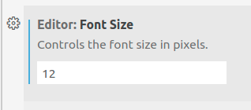
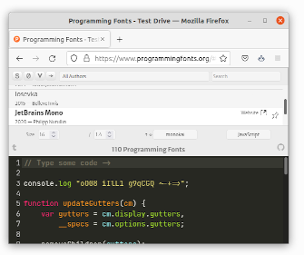
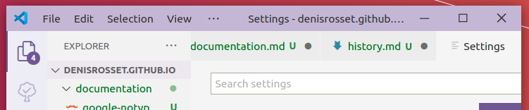

Appearance
Contents
Appearance¶
Font size / display size¶

You can adjust the font size and the interface zoom independently.
I tend to keep the editor font size (editor.fontSize) at 12 and adjust the zoom with the
menu command View / Appearance / Zoom in or out depending on the screen I use.
Font¶

Pick your own on https://www.programmingfonts.org.
Fira Code / Hack / JetBrains Mono / Monaco / Source Code Pro / Ubuntu Mono are good options.
I like https://www.jetbrains.com/lp/mono/, with the options:
"editor.fontFamily": "JetBrains Mono",
"editor.fontWeight": 300,
"editor.fontLigatures": true,
Compact title bar on Linux¶

Useful on small screens, i.e. laptops. The setting is:
"window.titleBarStyle": "custom"
Disable if it causes trouble with mouse cursor rendering when display scaling is enabled.
Multiple monitors¶
Use of multiple VS Code windows is a mess, see:
It’s possible to open several copies of VS Code on the same project, but one should use the extra windows only to edit files.
I personally use a single screen for VS Code.